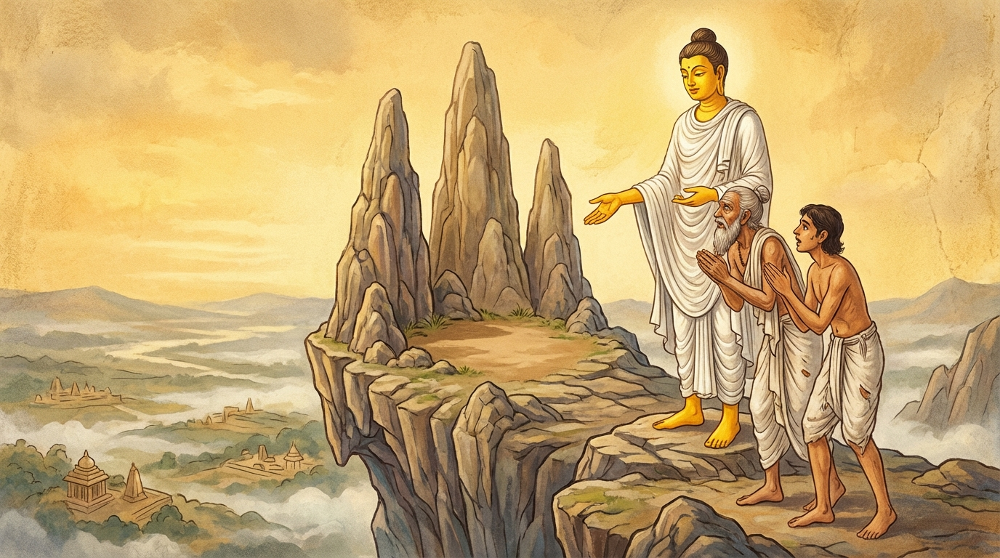

6. උපසාළ්හක ජාතකය (166)
“උපසාළකනාමානි” යන මේ දේශනාව බුදුරජාණන් වහන්සේ වේළුවනාරාමයෙහි වැඩවසන සමයෙහි ‘උපසාළ්හක’ නම් වූ එක්තරා සොහොන් පිරිසිදු කරන බමුණෙකු අරබයා වදාළ සේක. ඔහු මහා ධනවත් ආඪ්ය පුද්ගලයෙක් වූ නමුත්, මිසදිටු ගත් අයෙකු බැවින් තමාගේ නිවසට නුදුරු විහාරස්ථානයෙහි වැඩවසන්නා වූ බුදුවරුන්ට දානාදී සංග්රහයන් නොකළේ ය. ඔහුගේ පුතණුවන් වනාහි නුවණැත්තෙකි; ඤාණවන්ත ය. ඒ පියා මහලු වූ කල්හි පුතු අමතා, “දරුව, වෙනත් වසලයකු (නීචයකු) දවන ලද සොහොනක මා නො දවන්න. කිසිවෙකු නොදැවූ, ඉඳුල් නොවූ සොහොන් බිමක ම මා ආදාහනය කරන්නැ” යි කීවේ ය. එවිට පුතණුවන්, “පියාණෙනි! මම ඔබ වහන්සේ දැවිය යුතු එවැනි ස්ථානයක් නො දනිමි. එබැවින් මාව රැගෙන ගොස් ‘මෙන්න මේ ස්ථානයේ මාව දැවිය යුතු ය’ යි ඔබ වහන්සේ විසින් ම පෙන්වා දෙනු මැනවැ” යි කීවේ ය. බමුණා ද, “යහපතැයි, දරුව” යි කියා ඔහු කැඳවාගෙන නුවරින් නික්ම ගිජුකුළු පව්ව මුදුනට නැග, “දරුව, මේ ස්ථානය වෙනත් වසලයකු නො දැවූ ස්ථානයකි. මෙහි මා දැවිය යුතු ය” යි කියා පුතා සමඟ පර්වතයෙන් බැසීමට පටන් ගත්තේ ය.
බුදුරජාණන් වහන්සේ එදින අලුයම් කාලයෙහි හික්මවිය යුතු පුද්ගලයන් බලන්නාහු, මහා කරුණා සමාපත්තියට සමවැදී ඒ පිය පුත් දෙදෙනාට සෝවාන් වීමට හේතු සම්පත් ඇති බව දුටු සේක. එබැවින් මග රැක සිටි වැද්දෙකු මෙන් පර්වතය පාමුලට වැඩම කොට, පර්වත මුදුනේ සිට බසින්නා වූ පිය පුතුන් දෙදෙනාගේ පැමිණීම අපේක්ෂාවෙන් වැඩසිටි සේක. බසින්නා වූ ඔවුහු බුදුරජාණන් වහන්සේව දුටුවාහු ය. බුදුරජාණන් වහන්සේ පිළිසඳර කතා කොට, “බමුණ! කොහි ගියාහු ද?” යි විචාළ සේක. එවිට මානවකයා ඒ කාරණය සැල කළේ ය. බුදුරජාණන් වහන්සේ, “එසේ නම් එන්න. ඔබේ පියා කියන ලද තැනට යමු” යි පිය පුතු දෙදෙනා රැගෙන පර්වතය මුදුනට නැග, “කුමන ස්ථානය ද?” යි විචාළ සේක. මානවකයා, “ස්වාමීනි, මේ පර්වත තුන අතර ප්රදේශය යැ” යි පෙන්වා දුන්නේ ය. බුදුරජාණන් වහන්සේ, “මානවකය! ඔබේ පියා දැන් පමණක් නොව පෙරත් සොහොන් පිරිසිදු කරන්නෙක් ම ය. මොහු මා මෙතන දවන්නැ යි ඔබට කීවේ දැන් පමණක් නො වේ. පෙරත් මේ ස්ථානයෙහි ම තමා දවන ලෙස කීවේ යැ” යි වදාරා, ඔහු විසින් අයැද සිටින ලද්දේ අතීත කථාව ගෙනහැර දැක්වූ සේක.
අතීතයෙහි මේ රජගහ නුවර ම මේ උපසාළ්හක බමුණා ම උපන්නේ ය. මොහුගේ පුතා වී උපන්නේ ද මේ මානවකයා ම ය. එකල බෝසතාණන් වහන්සේ මගධ රට බමුණු කුලයක ඉපදී සියලු ශිල්ප හදාරා නිමවා, තවුස් පැවිද්දෙන් පැවිදි ව පඤ්ච අභිඥාවන් ද අෂ්ට සමාපත්තීන් ද උපදවා, ධ්යාන සුව විඳිමින් හිමවත් පෙදෙසෙහි බොහෝ කලක් වාසය කොට, ලුණු ඇඹුල් සෙවීම පිණිස අවුත් ගිජුකුළු පව්වේ පන්සලක වාසය කළහ. එකල ඒ බමුණා මේ ක්රමයට ම පුතාට කියා, පුතා විසින් “ඔබ ම මට එවැනි තැනක් පෙන්වා දෙනු මැනවැ” යි කී කල්හි, “මේ ස්ථානය යැ” යි කියා පුතා සමඟ පර්වතයෙන් බසින්නේ, බෝසතාණන් වහන්සේ දැක උන්වහන්සේ වෙත එළඹියේ ය. බෝසතාණන් වහන්සේ මේ ආකාරයෙන් ම විමසා මානවකයාගේ වචනය අසා, “එන්න, ඔබේ පියා විසින් පෙන්වා දුන් ස්ථානයේ ඉඳුල් බව හෝ නො ඉඳුල් බව දැන ගන්නෙමු” යි ඔවුන් සමඟ පර්වතය මුදුනට නැග ගත්හ. “මේ පර්වත තුන අතර ඇත්තේ මිනී නො දැමූ තැන යැ” යි මානවකයා කී කල්හි, බෝසතාණන් වහන්සේ මෙසේ වදාළහ: “මානවකය! මේ ස්ථානයෙහි ම දවන ලද බමුණන්ගේ ප්රමාණයක් නැත. ඔබේ පියා ම මේ රජගහ නුවර ම බමුණු කුලයෙහි ම ඉපිද, ‘උපසාළ්හක’ නමින් ම මේ පර්වත අතරෙහි ම ආත්ම දහහතර දහසක් (14,000) ම ආදාහනය කරන ලදී. මහ පොළොවෙහි මළමිනී දවා නො කළ තැනක් හෝ සොහොන් බිමක් නො වූ තැනක් හෝ මිනී හිස් කබල් නො තිබූ තැනක් හෝ සොයා ගැනීමට නො හැකි ය” යි පවසා, පෙර විසූ කඳ පිළිවෙල දන්නා නුවණින් (පුබ්බේනිවාසානුස්සති ඥානයෙන්) කරුණු පිරිසිඳ දක්වා මේ ගාථා දෙක වදාළහ:

“උපසාළ්හක නමින් ම දාහතර දහසක් ආත්මභාවයන්හි දී මේ ප්රදේශයේ දී ම (ඔබව) දවන ලදී. මේ ලොව (සත්වයන්) නො මැරුණු තැනක් නැත.”
“යම් පුද්ගලයෙකු තුළ සත්යය ද, ධර්මය ද, අවිහිංසාව ද, සන්සුන්කම (සංයමය) ද, ඉන්ද්රිය දමනය ද ඇත්තේ නම් ආර්යයෝ එතැන ඇසුරු කරති. එය ලොවෙහි නො මැරෙන තැනයි (නිවනයි).”
යනුවෙන් මේ ගාථා දෙක වදාළහ.
එහි අනාමතං යනු නො මැරුණු තැනයි; සාමීප්ය වශයෙන් (සමීපචාරයෙන්) නිවන යැයි කියනු ලැබේ. මරණය වැළැක්වීම් වශයෙන් එයට ‘අමත’ යැයි කියනු ලැබේ. ‘අනමතං’ යනු ද පාඨයකි. ලෝකයෙහි නො මැරෙන තැනක් හෝ සොහොනක් නො වූ තැනක් නම් නැත යන අර්ථයි. යම්හි සච්චඤ්ච ධම්මො ච යනු යම් පුද්ගලයෙකු කෙරෙහි චතුරාර්ය සත්යයට වස්තු වූ පූර්වභාග සත්ය ඥානය ද, ලොව්තුරු දහම ද ඇත යන අදහසයි. අහිංසා යනු අනුන්ට හිංසා නො කිරීම හෙවත් පීඩා නො කිරීමයි. සංයමො යනු සීල සංවරයයි. දමො යනු ඉන්ද්රිය දමනයයි. යම් පුද්ගලයෙකු තුළ මේ ගුණ ධර්ම ඇත් ද, එතං අරියා සෙවන්ති එනම් ආර්ය වූ බුදුවරයෝ ද, පසේ බුදුවරයෝ ද, බුද්ධ ශ්රාවකයෝ ද මේ තැන (මේ ගුණ ඇති අය) සේවනය කරති; මෙබඳු පුද්ගලයෙකු වෙත එළඹෙති; ඇසුරු කරති යන අර්ථයි. එතං ලොකෙ අනාමතං යනු මේ ගුණය ලෝකයෙහි නො මැරෙන බව (නිවන) සාධනය කරන බැවින් ‘අනාමත’ නම් වේ.
මෙසේ බෝසතාණන් වහන්සේ පිය පුතු දෙදෙනාට දහම් දෙසා, සතර බ්රහ්ම විහරණ වඩා (ජීවිතාන්තයේ දී) බඹලොව උපන්නාහ.
බුදුරජාණන් වහන්සේ මේ ධර්ම දේශනාව ගෙනහැර දක්වා, චතුරාර්ය සත්යය ප්රකාශ කොට ජාතක කථාව නිමවා වදාළ සේක. සත්ය දේශනාව කෙළවර පිය පුත් දෙදෙනා සෝවාන් ඵලයෙහි පිහිටියාහු ය. “එකල පිය පුත් දෙදෙනා වූයේ දැන් මේ පිය පුත් දෙදෙනා ම ය. තාපසයා වනාහි මම ම වූයෙමි” යි වදාළ සේක.
උපසාළක ජාතක වර්ණනාව හයවැනියි.